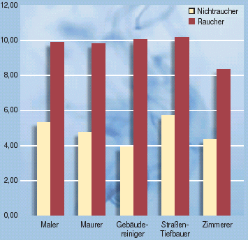
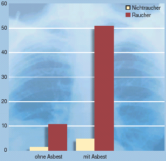

Verengung der Atemwege in % der Untersuchten

Bei Arbeitsmedizinischen Vorsorgeuntersuchungen von Beschäftigten der Bauwirtschaft wurden bei Rauchern Verengungen der Atemwege, wie chronische Bronchitis, doppelt so häufig gefunden wie bei Nichtrauchern.
Rauchen verstärkt die schädigenden Wirkungen von Gefahrstoffen. Dies gilt besonders bei Einwirkung von Asbest- und Quarzstaub, aber auch für lösemittelhaltige Lacke und Blei.
Risiko Lungenkrebs

Das Risiko an Lungenkrebs zu erkranken, wird durch Arbeiten mit Asbest um das 5-fache erhöht. Wird zusätzlich geraucht, erhöht sich das Risiko um das 50-fache.